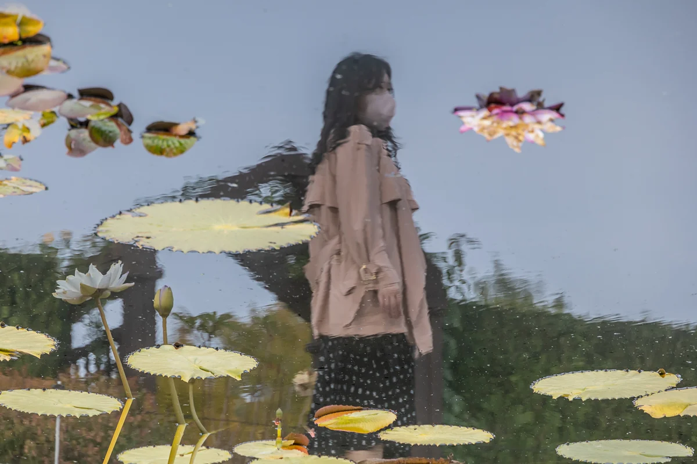

यह शीर्षक उनके निधन के बाद AI द्वारा लिखा गया वर्णन है
3D प्रदर्शनी में देखें मूल फ़ाइल डाउनलोड करें

श्रेय कैसे दें
यूमोक (流木) ली दोंग-जू, “कुमुदिनी ताल में व्यक्ति का प्रतिबिंब”, 2021. CC BY 4.0, seungheon.com
जनजू वनस्पति उद्यान · 2021
भू-दृश्य
यह शीर्षक उनके निधन के बाद AI द्वारा लिखा गया वर्णन है
3D प्रदर्शनी में देखें मूल फ़ाइल डाउनलोड करें
यूमोक (流木) ली दोंग-जू, “कुमुदिनी ताल में व्यक्ति का प्रतिबिंब”, 2021. CC BY 4.0, seungheon.com